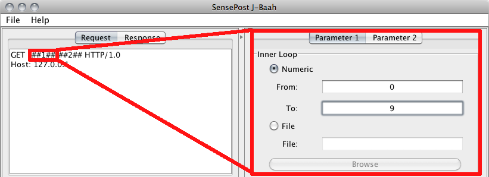

SensePost J-Baah :: Help :: Specifying Parameters

Specifying Parameters
Parameters to be substituted into the specified HTTP request are set by making use of the tab pages titled "Parameter 1" and "Parameter 2". These parameters can either be numeric, or the input can be imported from a file.
The strings ##1## and ##2## in the HTTP request are substituted with parameters 1 and 2 respectively. If the HTTP re1uest does not contain ##1## or ##2##, the parameter specification controls will be disabled.
Note: Should numeric parameters be used, zero padding the variables will force all requests to be the specific length. For example, specifying Parameter 1 as 00 - 10 will ensure that every parameter substituted has a length of 2 (ie: 01, 02, 03, ..., 10).